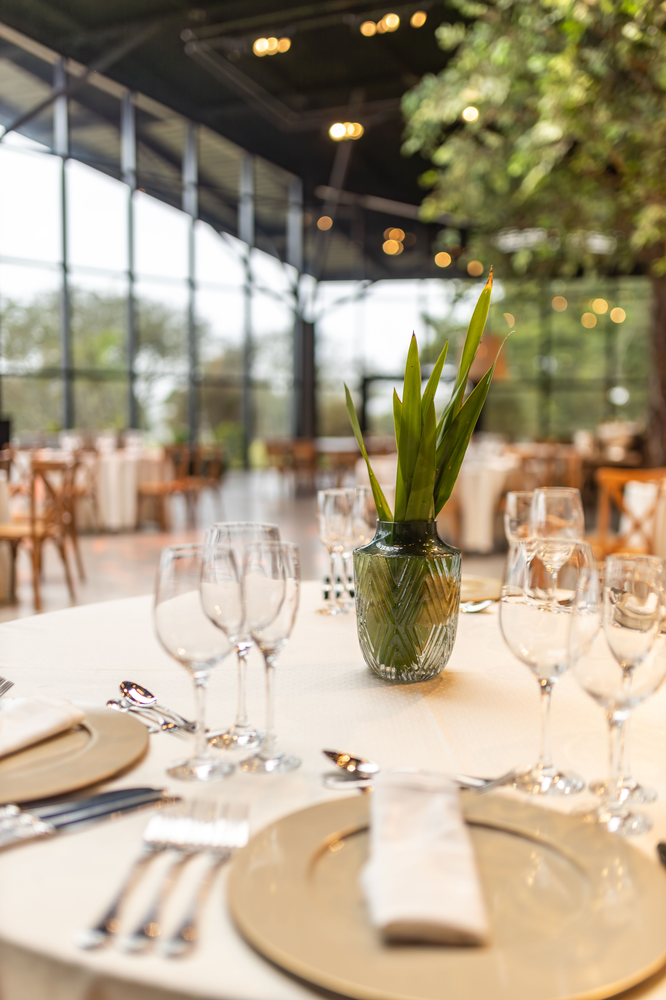
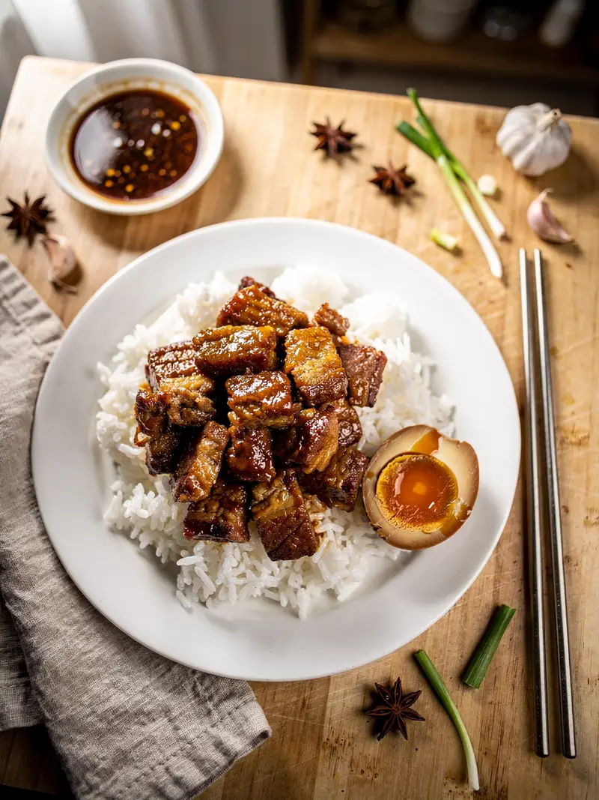

01
TRADITIONAL
Main Dishes
Experience traditional Angolan dishes prepared with authentic flavours.
Explore →REDE ALIMENTAR · LUANDA
Discover authentic Angolan flavours alongside carefully selected international dishes.


ABOUT REDE ALIMENTAR
Rede Alimentar is a restaurant located in Kinaxixi, Luanda, offering a variety of Angolan and international dishes in a comfortable environment.
The restaurant welcomes individuals, families and business customers and also provides takeaway and catering services for special events.
Discover Our Story →DISCOVER OUR FOOD
Traditional flavours and international dishes prepared for every occasion.
TRADITIONAL
Experience traditional Angolan dishes prepared with authentic flavours.
Explore → 02
02
ANGOLAN FLAVOURS
Discover dishes inspired by Angolan culinary traditions.
Explore →INTERNATIONAL
A selection of international dishes alongside our traditional cuisine.
Explore → 04
04

OUR TRADITION
Our food celebrates traditional Angolan flavours while welcoming a variety of international dishes.
Every dining experience is designed to provide quality meals and excellent customer service in a comfortable environment.
About Rede AlimentarWHAT WE OFFER
Enjoy your meal in a comfortable restaurant environment.
Enjoy your favourite dishes wherever you are.
Catering services are available for special events.
SPECIAL OFFERS
Discover our latest restaurant offers and special meals.
View OffersSPECIAL OFFERS
Discover our latest restaurant offers and special meals.
View Offers
CUSTOMER REVIEWS